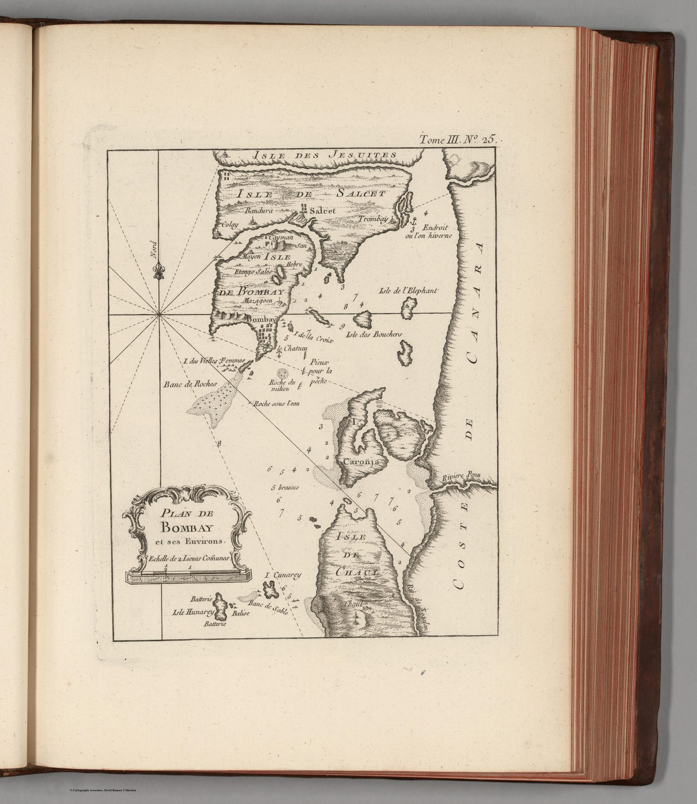

← Home Ground Bombay and Deccan

The chart
Bellin was engineer and hydrographer to the French naval establishment. His 1764 Petit Atlas Maritime gathered hundreds of coastal charts and harbour plans. This plate, engraved by J. Arrivet, shows Bombay with pictorial relief, settlements and depth soundings.
A harbour rather than a country
The navigational problem determines what is included. Water depth, approach and anchorage matter more than inland political geography. Bombay is represented as an island harbour to be entered and used.
Knowledge of a rival possession
Bombay was British, but a French maritime atlas had every reason to record it. Hydrographic knowledge crossed political boundaries because rival navies and merchants needed to understand the same ports. The map belongs to a European archive of strategic observation rather than to a single imperial administration.
The gaze
Bombay enters this collection by its soundings. Bellin measured a British harbour for French captains, and what he recorded – depths, islands, the anchorage – is exactly what a rival would want to know. The first close look at the city is a look at its water.
In the Deccan timeline
Masulipatnam, Madras, Bombay (1611–1668) · Kanhoji Angre (c. 1669–1729) · Bassein, 1739 (February–May 1739) · Wadgaon and Salbai (1779–1782)